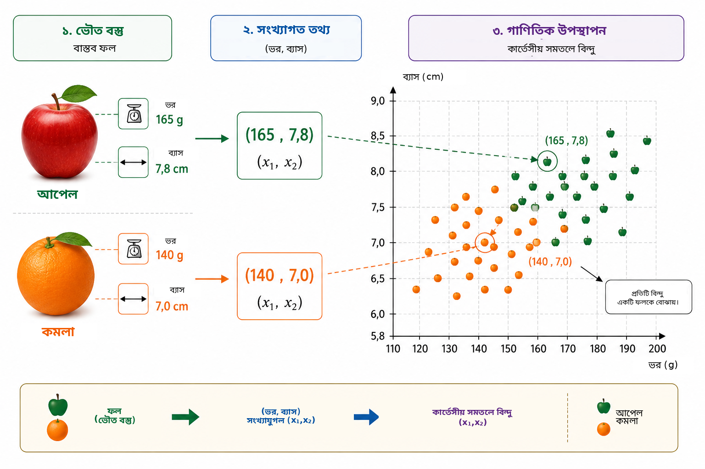
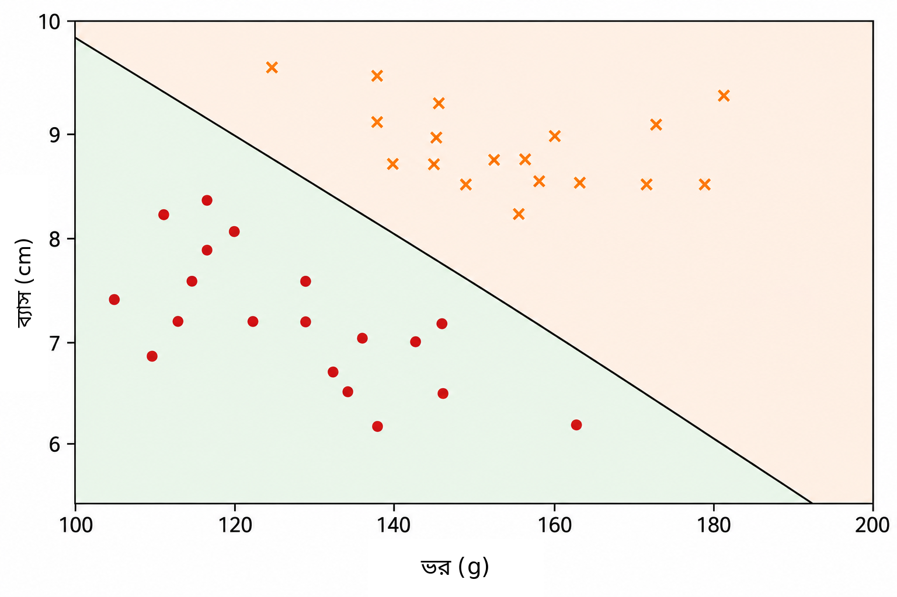
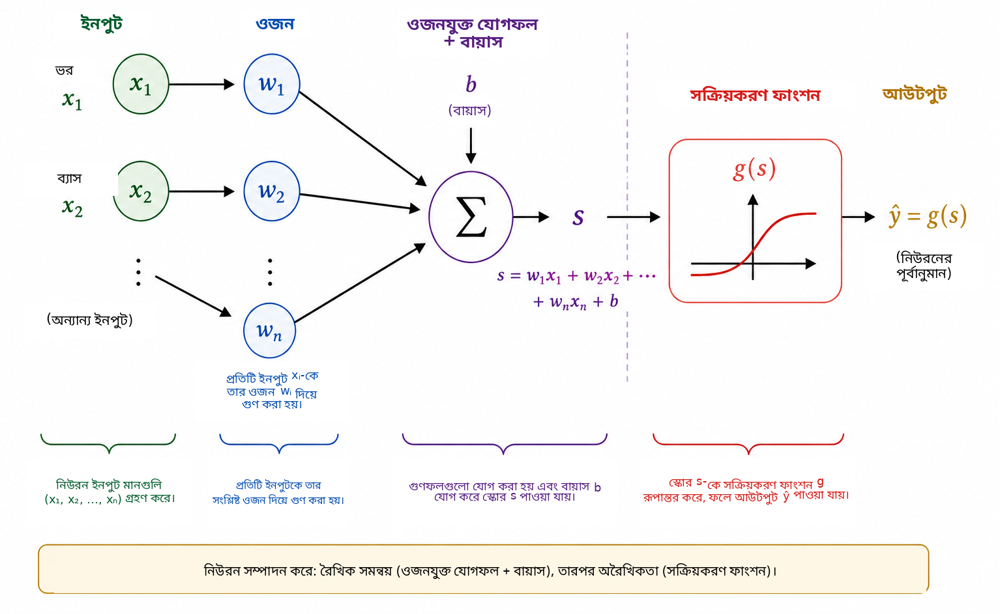
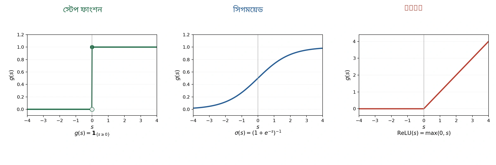
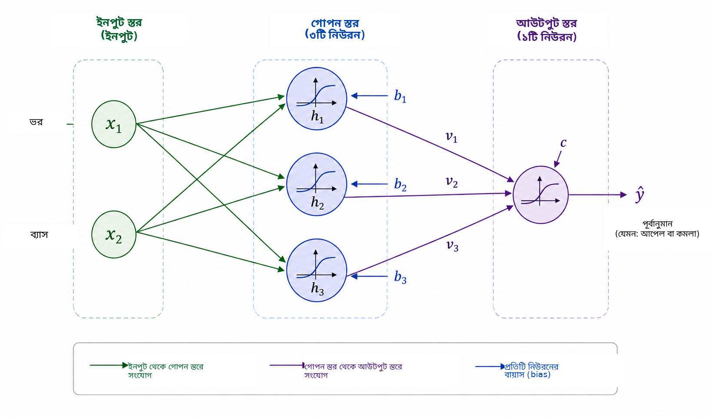
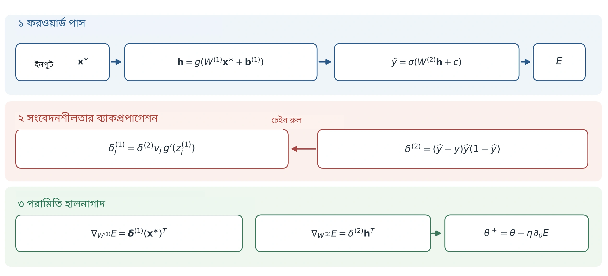
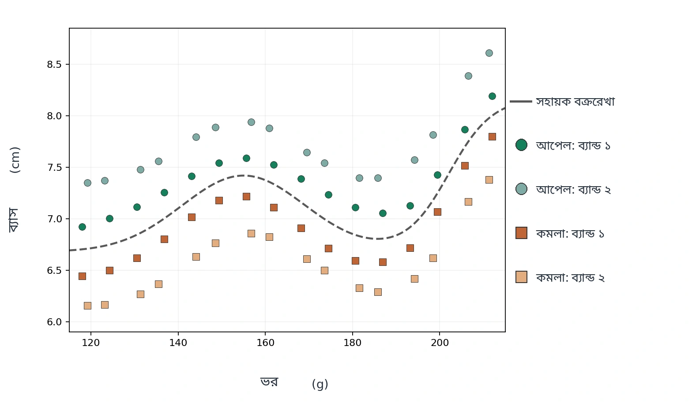
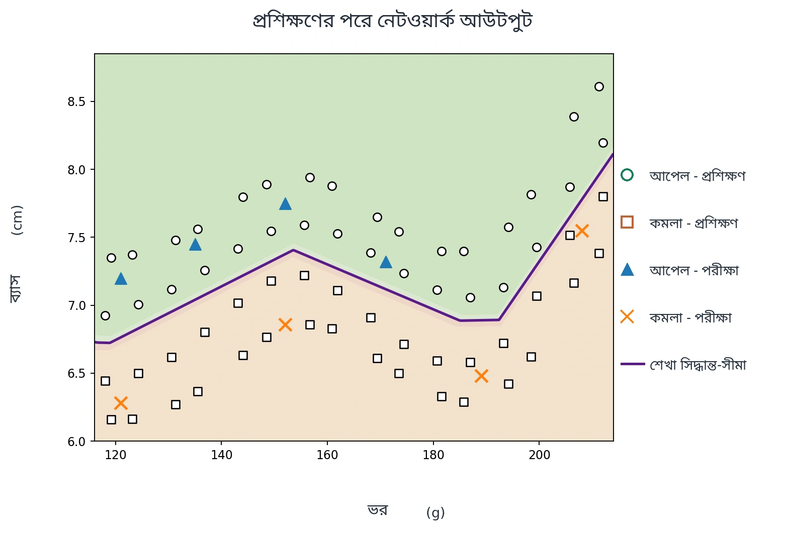

একটি কম্পিউটার কখন শিখতে পারে?
দৈনন্দিন জীবনে আমরা প্রায় অজান্তেই শ্রেণিবিন্যাসের সিদ্ধান্ত নিই। কোনো ফল দেখে দ্রুত বুঝে ফেলি সেটি আপেল নাকি কমলা; ফোনে বার্তা এলে বৈধ কথোপকথন ও অনাকাঙ্ক্ষিত বিজ্ঞাপন আলাদা করি; চিকিৎসাবিষয়ক বিশ্লেষণে একাধিক পরিমাপ একত্র করে সিদ্ধান্তে সহায়তা নেওয়া হয়; আর আর্থিক প্রতিষ্ঠানে ঋণ দেওয়ার আগে বিভিন্ন ধরনের তথ্য মূল্যায়ন করা হয়। এসব ক্ষেত্রেই একটি উত্তর পেতে একাধিক বৈশিষ্ট্যকে একসঙ্গে বিবেচনা করা হয়।
অনেক প্রচলিত কম্পিউটার প্রোগ্রামে এই সিদ্ধান্ত তৈরির নিয়মগুলো প্রোগ্রামার স্পষ্টভাবে লিখে দেন। নিয়ম জানা থাকলে এবং পরিষ্কারভাবে প্রকাশ করা গেলে এই পদ্ধতি ভালো কাজ করে। কিন্তু ডেটা খুব বৈচিত্র্যময় হলে, অথবা ভালো সিদ্ধান্তের জন্য প্রয়োজনীয় সব শর্ত আগে থেকে নির্দিষ্ট করা কঠিন হলে, পদ্ধতিটি সীমাবদ্ধ হয়ে পড়ে। তখন স্বাভাবিক একটি প্রশ্ন উঠে আসে:
আমরা কি এমন একটি প্রোগ্রাম তৈরি করতে পারি, যা সিদ্ধান্তের নিয়ম আগে থেকে না পেয়ে উদাহরণ থেকে নিজেই সেই নিয়ম শিখবে?
এটি মেশিন লার্নিং-এর কেন্দ্রীয় ধারণাগুলোর একটি। মেশিন লার্নিং হলো কৃত্রিম বুদ্ধিমত্তার সেই ক্ষেত্র যেখানে ডেটা থেকে মডেলের প্যারামিটার নির্ধারণের পদ্ধতি অধ্যয়ন করা হয় । সুপারভাইজড লার্নিং সমস্যায় অ্যালগরিদমকে সঠিক উত্তরসহ উদাহরণ দেওয়া হয়, এবং লক্ষ্য থাকে এমন একটি মডেল পাওয়া যা প্রশিক্ষণে না দেখা উদাহরণেও কার্যকর পূর্বানুমান দিতে পারে। এই উদ্দেশ্যে তৈরি বহু মডেলের মধ্যে কৃত্রিম নিউরাল নেটওয়ার্ক ছবি শনাক্তকরণ, ভাষা প্রক্রিয়াকরণ, সংকেত বিশ্লেষণ এবং টাইম সিরিজ পূর্বানুমানের মতো কাজে বিশেষ গুরুত্ব পেয়েছে ।
গণিত, গণনা এবং বিদ্যালয় শিক্ষার মধ্যে সেতু হিসেবে নিউরাল নেটওয়ার্কের ব্যবহার নিয়ে Professor de Matemática Online-এ Batista এবং Martins ইতিমধ্যে আলোচনা করেছেন। তাঁরা শিক্ষকশিক্ষা, Python এবং অঙ্ক শনাক্তকরণকে যুক্ত করে একটি কার্যক্রম উপস্থাপন করেন। বর্তমান প্রবন্ধটি একটি পরিপূরক পথ অনুসরণ করে। আমাদের মূল লক্ষ্য একটি ছোট নিউরাল নেটওয়ার্কের অভ্যন্তরীণ গাণিতিক কাঠামো স্পষ্ট করা: বিশ্লেষণাত্মক জ্যামিতি থেকে শুরু করে ধাপে ধাপে গ্রেডিয়েন্ট গণনা এবং ব্যাকপ্রোপাগেশনের সরাসরি বাস্তবায়ন পর্যন্ত পৌঁছানো।
আধুনিক প্রয়োগের জটিলতা সত্ত্বেও, নিউরাল নেটওয়ার্কের গাণিতিক মূল তুলনামূলকভাবে পরিচিত ধারণার সাহায্যে বোঝানো যায়। মৌলিকভাবে, নিউরাল নেটওয়ার্ক হলো কয়েকটি ফাংশনের সমন্বয়, যার প্যারামিটার ডেটা থেকে সমন্বয় করা হয়। আমরা একটি সরল জ্যামিতিক সমস্যা দিয়ে শুরু করব, একটি বিভাজক সরলরেখাকে কৃত্রিম নিউরন হিসেবে পুনর্ব্যাখ্যা করব, কয়েকটি নিউরন সংযুক্ত করব, সক্রিয়করণ ফাংশনের ভূমিকা বুঝব এবং দেখব কীভাবে অবকলজ ব্যবহার করে নেটওয়ার্কের প্যারামিটার স্বয়ংক্রিয়ভাবে সমন্বয় করা যায়। শেষে Python-এ একটি সম্পূর্ণ ছোট উদাহরণ বাস্তবায়ন করব, যাতে সমীকরণ ও কোডের মধ্যে সরাসরি সম্পর্ক বজায় থাকে।
সমস্যাটির গাণিতিক উপস্থাপন
নিউরাল নেটওয়ার্ক কীভাবে কাজ করে তা বোঝার জন্য আমরা ইচ্ছাকৃতভাবে একটি সহজ সমস্যা দিয়ে শুরু করি: আপেল ও কমলা আলাদা করা। কোনো ফলে রং, ভর, ব্যাস, গঠন এবং গন্ধের মতো বহু বৈশিষ্ট্য থাকতে পারে, যেগুলো এই কাজে সহায়ক হতে পারে। কিন্তু প্রাথমিক গাণিতিক মডেলে সব জটিলতা অন্তর্ভুক্ত করার প্রয়োজন নেই। আমরা কেবল দুটি সহজে পরিমাপযোগ্য রাশি ব্যবহার করব: গ্রামে ভর এবং সেন্টিমিটারে ব্যাস।
অতএব প্রতিটি ফলকে একটি সুশৃঙ্খল যুগল দ্বারা উপস্থাপন করা হবে \[(x_1,x_2),\] যেখানে \[x_1=\text{{ভর}} \qquad\text{{এবং}}\qquad x_2=\text{{ব্যাস}}.\]
তাই \((155,\;7.2)\) যুগলটি এমন একটি ফলকে বোঝায় যার ভর \(155\) g এবং ব্যাস \(7.2\) cm। ভৌত বস্তুটিকে দুটি সংখ্যাগত পরিমাপে রূপান্তর করলে প্রতিটি ফল কার্তেসীয় সমতলের একটি বিন্দুর সঙ্গে যুক্ত হয়: প্রথম স্থানাঙ্ক তার ভর এবং দ্বিতীয়টি তার ব্যাস নির্দেশ করে। চিত্র 1-এ আপেল ও কমলার একটি কাল্পনিক সেটের জন্য এই উপস্থাপন দেখানো হয়েছে।

এই রূপান্তর সমস্যাটিকে দেখার পদ্ধতিই বদলে দেয়। সরাসরি “কীভাবে আপেল বা কমলা চিনব” প্রশ্নটির বদলে আমরা একটি জ্যামিতিক প্রশ্ন করি: সমতলে দুই শ্রেণির বিন্দুগুলোকে কীভাবে আলাদা করা যায়? মেশিন লার্নিংয়ে এই দৃষ্টিভঙ্গির পরিবর্তন অত্যন্ত গুরুত্বপূর্ণ। ছবি, লেখা, শব্দ এবং পরীক্ষণমূলক সংকেত — সবকিছুকেই অ্যালগরিদমে দেওয়ার আগে সংখ্যাগত উপস্থাপনে রূপান্তর করতে হয়। আমাদের উদাহরণে প্রতিটি বস্তুর মাত্র দুটি স্থানাঙ্ক আছে; বাস্তব প্রয়োগে একটি উপস্থাপনে শত, সহস্র বা এমনকি লক্ষাধিক উপাদান থাকতে পারে। নীতিটি একই: প্রতিটি উদাহরণকে কিছু সংখ্যার সঙ্গে যুক্ত করা হয় এবং মডেল এমন একটি নিয়ম খোঁজে যা সেই উপস্থাপনকে কাঙ্ক্ষিত উত্তরে রূপান্তর করে।
আমরা সবচেয়ে সহজ জ্যামিতিক নিয়ম দিয়ে শুরু করি এবং প্রশ্ন করি: একটি মাত্র সরলরেখা কি আপেলের বিন্দুগুলোকে কমলার বিন্দু থেকে যথেষ্ট ভালোভাবে আলাদা করতে পারে?
শ্রেণিবিন্যাসকারী হিসেবে একটি সরলরেখা
প্রতিটি ফলকে কার্তেসীয় সমতলে একটি বিন্দু হিসেবে উপস্থাপন করার পর শ্রেণিবিন্যাস একটি জ্যামিতিক সমস্যায় পরিণত হয়: একটি সরলরেখা কি আপেলকে কমলা থেকে আলাদা করতে পারে? এই প্রশ্নটি মেশিন লার্নিংয়ের একটি গুরুত্বপূর্ণ পরিবার, রৈখিক শ্রেণিবিন্যাসকারী, সম্পর্কে মৌলিক ধারণা দেয়।
চিত্র 2-এর মতো ডেটার মেঘের মধ্যে দিয়ে একটি সরলরেখা কল্পনা করি। রেখাটি সমতলকে দুটি অর্ধসমতলে ভাগ করে। যদি অধিকাংশ আপেলের বিন্দু এক পাশে এবং অধিকাংশ কমলার বিন্দু অন্য পাশে থাকে, তবে নতুন কোনো ফলের অবস্থানকে শ্রেণিবিন্যাসের নিয়ম হিসেবে ব্যবহার করা যায়। তার ভর ও ব্যাস মেপে আমরা ফলটিকে একটি বিন্দু হিসেবে উপস্থাপন করি এবং দেখি বিন্দুটি রেখার কোন পাশে আছে।

কার্তেসীয় সমতল \((x_1,x_2)\)-এ একটি সরলরেখা লেখা যায় \[w_1x_1+w_2x_2+b=0, \qquad (w_1,w_2)\neq(0,0).\]
ভেক্টর \((w_1,w_2)\) রেখাটির লম্ব এবং তাই তার অভিমুখ নির্ধারণ করে, আর প্যারামিটার \(b\) তার অবস্থানে অবদান রাখে। এই উপস্থাপনে সামান্য অতিরিক্ততা আছে: \(w_1\), \(w_2\) এবং \(b\)-কে একই অশূন্য ধ্রুবক দিয়ে গুণ করলে একই রেখাই পাওয়া যায়। ফলে সীমার প্যারামিটারগুলো অনন্য নয়। এদের সংখ্যাগত ব্যাখ্যা চলকগুলোর স্কেলের উপরও নির্ভর করে। ভর গ্রামে এবং ব্যাস সেন্টিমিটারে মাপা হয় বলে এককের পার্থক্য বিবেচনা না করে \(w_1\) ও \(w_2\)-এর মান সরাসরি তুলনা করা উচিত নয়।
রেখার সমীকরণ নিজেই একটি বিন্দু সীমার কোন পাশে আছে তা নির্ধারণের সহজ উপায় দেয়। স্কোর সংজ্ঞায়িত করি \[s(x_1,x_2)=w_1x_1+w_2x_2+b.\]
যদি \(s(x_1,x_2)=0\), তবে বিন্দুটি রেখার উপর। যদি \(s(x_1,x_2)>0\), তবে এটি এক অর্ধসমতলে; আর যদি \(s(x_1,x_2)<0\), তবে অন্য অর্ধসমতলে। ধরি ধনাত্মক স্কোর আপেল এবং ঋণাত্মক স্কোর কমলাকে নির্দেশ করে। তাহলে নিয়মটি হবে \[\begin{cases} s(x_1,x_2)\geq 0 & \Longrightarrow \text{{আপেল}},\\ s(x_1,x_2)<0 & \Longrightarrow \text{{কমলা}}. \end{cases}\]
উদাহরণ হিসেবে ধরি সীমাটি নির্ধারিত হয়েছে \[w_1=\frac{1}{10}, \qquad w_2=2, \qquad b=-30.\] ভর \(160\) g এবং ব্যাস \(7.8\) cm এমন একটি ফলের জন্য \[\begin{aligned} s &=\frac{1}{10}\times160+2\times7.8-30\\ &=16+15.6-30\\ &=1.6. \end{aligned}\] স্কোর ধনাত্মক, তাই বিন্দুটি সেই অর্ধসমতলে রয়েছে যেটিকে আমরা আপেলের সঙ্গে যুক্ত করেছি। এই শ্রেণিবিন্যাসকারী ফলটিকে আপেল হিসেবে শনাক্ত করবে।
\(w_1\), \(w_2\) এবং \(b\)-এর প্রতিটি নির্বাচন ভালো শ্রেণিবিন্যাস দেয় না। কিছু রেখা দুই দলকে খারাপভাবে আলাদা করে, অন্যগুলো কম ভুল করে। শেখার সমস্যাটি হলো লেবেলযুক্ত পূর্ববর্তী উদাহরণ ব্যবহার করে এমন প্যারামিটার নির্ধারণ করা যা মডেলের ত্রুটির কোনো পরিমাপ কমায়। রেখাটির অবস্থান সরাসরি প্রোগ্রাম না করে আমরা চাই অ্যালগরিদম ডেটা থেকে তার সহগগুলো সমন্বয় করুক।
শ্রেণিগুলো আনুমানিকভাবে রৈখিকভাবে পৃথকযোগ্য হলে একটি রেখাই যথেষ্ট ভালো কাজ করতে পারে। আরও জটিল ডেটাসেটে অরৈখিক সিদ্ধান্তসীমা প্রয়োজন হতে পারে। সেই সীমাবদ্ধতা নিয়ে আলোচনার আগে আমরা সদ্য তৈরি শ্রেণিবিন্যাসকারীকে একটি প্রাথমিক গণনামূলক একক হিসেবে পুনর্ব্যাখ্যা করি: একটি কৃত্রিম নিউরন।
কৃত্রিম নিউরন
আগের অংশে \[s=w_1x_1+w_2x_2+b\] রাশিটি ব্যবহার করে নির্ধারণ করা হয়েছিল একটি ফল রেখার কোন পাশে আছে। একই রাশিকে কৃত্রিম নিউরন-এর গণনার প্রথম ধাপ হিসেবে দেখা যায়। একটি নিউরন সংখ্যাগত ইনপুট গ্রহণ করে, ওজন ও বায়াস ব্যবহার করে সেগুলোকে একত্র করে এবং পরে একটি গাণিতিক ফাংশন প্রয়োগ করে আউটপুট তৈরি করে।
আমাদের উদাহরণে ইনপুট হলো ভর \(x_1\) এবং ব্যাস \(x_2\)। প্রতিটি ইনপুটকে ওজন নামের একটি প্যারামিটার দিয়ে গুণ করা হয়; গুণফলগুলো \(b\) নামের একটি ধ্রুবক পদ, অর্থাৎ বায়াস,-এর সঙ্গে যোগ করা হয়। চিত্র 3-এ এই গণনাটি পরিকল্পিতভাবে দেখানো হয়েছে।

ওজনগুলো নির্ধারণ করে ইনপুটের পরিবর্তন স্কোরকে কীভাবে প্রভাবিত করবে। \(x_2\) এবং অন্য সব রাশি স্থির রেখে \(x_1\)-এ \(\Delta x_1\) পরিবর্তন করলে \(s\) পরিবর্তিত হয় \(w_1\Delta x_1\) পরিমাণে। একইভাবে \(x_2\)-এ \(\Delta x_2\) পরিবর্তন স্কোরকে \(w_2\Delta x_2\) পরিমাণে বদলে দেয়। চিহ্নও গুরুত্বপূর্ণ: ধনাত্মক ওজনের ক্ষেত্রে ইনপুট বাড়লে স্কোর বাড়ে, আর ঋণাত্মক ওজনে বিপরীত প্রভাব হয়। ভিন্ন ভিন্ন চলকের একক ও স্কেল আলাদা হলে এই ব্যাখ্যা সতর্কতার সঙ্গে ব্যবহার করতে হয়। এজন্য বাস্তব বাস্তবায়নে প্রশিক্ষণের আগে ইনপুট ডেটা প্রায়ই নরমালাইজ বা স্ট্যান্ডার্ডাইজ করা হয়।
বায়াস \(b\) হলো অ্যাফাইন রূপান্তরের ধ্রুবক পদ। জ্যামিতিকভাবে এটি সিদ্ধান্তসীমাকে সরাতে দেয়। যদি \(b=0\) হয়, তবে \[w_1x_1+w_2x_2=0\] রেখাটিকে উৎসবিন্দুর মধ্য দিয়ে যেতে বাধ্য করে। বায়াস থাকলে সীমাটি অন্য স্থানে সরতে পারে। সমতুল্যভাবে, \(x_1=x_2=0\) হলে স্কোর কেবল \(s=b\)।
স্কোরই নিউরনের চূড়ান্ত আউটপুট হওয়া জরুরি নয়। সাধারণভাবে এর উপর একটি সক্রিয়করণ ফাংশন \(g\) প্রয়োগ করা হয়: \[\widehat{y}=g(s)=g\left(w_1x_1+w_2x_2+b\right).\] অতএব গণনাটি দুই ধাপে হয়, \[\begin{aligned} s &= w_1x_1+w_2x_2+b,\\[4pt] \widehat{y} &= g(s). \end{aligned}\]
আগের অংশের প্যারামিটার ব্যবহার করলে \(s=1.6\)। যদি আমরা ধাপ ফাংশন \[g(s)= \begin{cases} 1, & s\geq0,\\ 0, & s<0, \end{cases}\] নির্বাচন করি, তবে \(\widehat{y}=g(1.6)=1\)। আমাদের নিয়ম অনুযায়ী ফলটি আপেল হিসেবে শ্রেণিবদ্ধ হবে। এই সক্রিয়করণে \(s\) শূন্য অতিক্রম করলেই সিদ্ধান্ত বদলে যায়, তাই শ্রেণিসীমা ঠিক \[w_1x_1+w_2x_2+b=0.\]
একটি নিউরন তাই সমন্বয়যোগ্য প্যারামিটারসহ একটি সহজ গাণিতিক বস্তু। এর প্রকৃত গুরুত্ব আসে অনেকগুলো এমন একককে যুক্ত করার মাধ্যমে। তবে নেটওয়ার্ক গঠনের আগে বোঝা দরকার সক্রিয়করণ ফাংশন কেন অপরিহার্য।
সক্রিয়করণ ফাংশন কেন দরকার?
একটি নিউরন প্রথমে অ্যাফাইন রূপান্তর ব্যবহার করে একটি স্কোর গণনা করে এবং তারপর একটি সক্রিয়করণ ফাংশন প্রয়োগ করে। নিউরাল নেটওয়ার্ককে জটিল সম্পর্ক উপস্থাপন করতে হলে এই দ্বিতীয় ধাপটি অপরিহার্য। কারণটি বোঝার জন্য এমন একটি নেটওয়ার্ক কল্পনা করি যেখানে কোনো সক্রিয়করণ ফাংশন নেই। প্রতিটি একক তখন হবে \[y=w_1x_1+w_2x_2+b.\]
এক-মাত্রিক উদাহরণে ধরি প্রথম একক তৈরি করে \[h=ax+b\] এবং দ্বিতীয়টি গণনা করে \[y=ch+d.\] প্রতিস্থাপন করলে \[y=c(ax+b)+d=acx+(cb+d),\] যা এখনও \(x\)-এর একটি অ্যাফাইন ফাংশন। একাধিক মাত্রাতেও একই কথা সত্য: অ্যাফাইন রূপান্তরের সমন্বয় আবারও অ্যাফাইন। ফলে অরৈখিক কোনো ক্রিয়া ছাড়া অনেক স্তর যোগ করলেও নেটওয়ার্ক মৌলিকভাবে বেশি প্রকাশক্ষম হয় না; পুরো সমন্বয়কে একটি মাত্র অ্যাফাইন রূপান্তর দিয়ে প্রতিস্থাপন করা সম্ভব।
সক্রিয়করণ ফাংশন এই সীমাবদ্ধতা ভাঙে। স্কোর \(s\) গণনার পর নিউরন সাধারণত একটি অরৈখিক ম্যাপ প্রয়োগ করে \[h=g(s).\] এমন বহু একক সংযুক্ত হলে ফলিত সমন্বয়কে আর একটি মাত্র অ্যাফাইন রূপান্তরে নামিয়ে আনা যায় না। এর ফলে নেটওয়ার্ক আরও জটিল সিদ্ধান্তসীমা তৈরি করতে পারে।
সবচেয়ে সহজ সক্রিয়করণ হলো ধাপ ফাংশন, \[g(s)= \begin{cases} 1, & s\geq0,\\ 0, & s<0. \end{cases}\] এটি দ্বিমূল্য সিদ্ধান্ত দেয় এবং শ্রেণিবিন্যাস বোঝাতে খুব উপযোগী। কিন্তু \(s\neq0\) হলে এর অবকলজ শূন্য এবং \(s=0\)-এ অবকলজ সংজ্ঞায়িত নয়। গ্রেডিয়েন্ট-ভিত্তিক প্রশিক্ষণে প্যারামিটার কীভাবে বদলানো উচিত তা নির্ধারণ করতে অবকলজ ব্যবহৃত হয়, তাই এই প্রশিক্ষণ পদ্ধতির জন্য ধাপ ফাংশন উপযুক্ত নয়।
একটি বিকল্প হলো সিগময়েড ফাংশন, \[\sigma(s)=\frac{1}{1+e^{-s}}.\] এটি প্রতিটি বাস্তব সংখ্যাকে \(0\) ও \(1\)-এর মাঝের মানে রূপান্তর করে। খুব ঋণাত্মক \(s\)-এ আউটপুট \(0\)-এর দিকে যায়; খুব ধনাত্মক \(s\)-এ \(1\)-এর দিকে যায়; আর মাঝামাঝি অঞ্চলে পরিবর্তনটি মসৃণ। সিগময়েড সর্বত্র অবকলনযোগ্য এবং \[\sigma'(s)=\sigma(s)\bigl(1-\sigma(s)\bigr).\] এর আউটপুট \(0\) ও \(1\)-এর মধ্যে হওয়ায় দ্বিমূল্য শ্রেণিবিন্যাসকারীর আউটপুট স্তরে এটি প্রায়ই ব্যবহৃত হয়। উপযুক্ত লস ফাংশনসহ একটি সম্ভাবনামূলক মডেলে আউটপুটকে \(1\)-দ্বারা নির্দেশিত শ্রেণির সম্ভাবনার আনুমানিক মান হিসেবে ব্যাখ্যা করা যায়। তবে গোপন স্তরে সিগময়েডের একটি অসুবিধা রয়েছে: বড় পরম মানের ইনপুটে এর অবকলজ খুব ছোট হয়ে যায়, যা গভীর নেটওয়ার্কে ভ্যানিশিং গ্রেডিয়েন্ট সমস্যায় অবদান রাখে।
গোপন স্তরে বহুল ব্যবহৃত সক্রিয়করণ হলো ReLU (Rectified Linear Unit), \[\mathrm{ReLU}(s)=\mathrm{max}(0,s) = \begin{cases} 0, & s<0,\\ s, & s\geq0. \end{cases}\] দুটি রৈখিক অংশ দিয়ে গঠিত হলেও ReLU সামগ্রিকভাবে রৈখিক নয়। \(s<0\) হলে এর অবকলজ \(0\) এবং \(s>0\) হলে \(1\)। \(s=0\)-এ প্রচলিত অর্থে অবকলজ নেই, এবং সফটওয়্যার বাস্তবায়নে গ্রেডিয়েন্টের জন্য একটি প্রচলিত মান বেছে নেওয়া হয়। ধনাত্মক ইনপুটে \(s\) বড় হলেও অবকলজ ছোট হয়ে যায় না, ফলে সিগময়েডের একটি স্যাচুরেশন সমস্যা এড়ানো যায়।
চিত্র 4-এ এই তিনটি সক্রিয়করণ তুলনা করা হয়েছে: ধাপ ফাংশনের হঠাৎ লাফ, সিগময়েডের মসৃণ পরিবর্তন এবং ReLU-এর ঢাল পরিবর্তন।

তাদের প্রধান বৈশিষ্ট্যগুলো নিচে সংক্ষেপে দেওয়া হলো।
| ফাংশন | আউটপুট | অবকলজ | সাধারণ ব্যবহার |
|---|---|---|---|
| ধাপ | \(\{0,1\}\) | \(s\neq0\) হলে শূন্য; \(s=0\)-এ সংজ্ঞায়িত নয় | ঐতিহাসিক মডেল ও শিক্ষামূলক উদাহরণ |
| সিগময়েড | \((0,1)\) | প্রতিটি \(s\)-এর জন্য বিদ্যমান | দ্বিমূল্য শ্রেণিবিন্যাসের আউটপুট স্তর |
| ReLU | \([0,\infty)\) | \(s<0\) হলে \(0\) এবং \(s>0\) হলে \(1\) | গোপন স্তর |
এই ফাংশনগুলোর বিস্তারিত বৈশিষ্ট্য আলাদা হলেও তাদের সাধারণ ধারণাগত ভূমিকা হলো অরৈখিকতা প্রবর্তন করা। এই অরৈখিকতাই পরবর্তী অংশের ছোট নেটওয়ার্ককে এমন সম্পর্ক উপস্থাপন করতে দেয় যা একটি মাত্র সরলরেখা দিয়ে সম্ভব নয়।
আরও পড়তে আগ্রহী পাঠকের জন্য Haykin নিউরাল নেটওয়ার্কের একটি ধ্রুপদি উপস্থাপন দেন; Goodfellow, Bengio এবং Courville সক্রিয়করণ ফাংশন ও গভীর নেটওয়ার্কের প্রশিক্ষণকে বিস্তৃত প্রেক্ষাপটে আলোচনা করেন। Nielsen-এর উন্মুক্ত বই নিউরন, সক্রিয়করণ এবং শেখা সম্পর্কে অন্তর্দৃষ্টি তৈরির জন্য বিশেষভাবে সহজলভ্য।
একটি ছোট নিউরাল নেটওয়ার্ক গঠন
এখন আমরা দুটি ইনপুট, তিনটি নিউরনবিশিষ্ট একটি গোপন স্তর এবং একটি আউটপুট নিউরন নিয়ে একটি নেটওয়ার্ক বিবেচনা করি। ইনপুটগুলো আগের মতোই \[x_1=\text{{ভর}}, \qquad x_2=\text{{ব্যাস}},\] এবং চিত্র 5-এর মতো এগুলো প্রত্যেক গোপন নিউরনে সরবরাহ করা হয়।

গোপন স্তরের আউটপুটগুলো \(h_1\), \(h_2\) এবং \(h_3\) হোক। প্রতিটি নিউরন একই দুটি ইনপুট পায়, কিন্তু তার নিজস্ব ওজন ও বায়াস থাকে: \[\begin{aligned} h_1&=g\left(w_{11}x_1+w_{12}x_2+b_1\right),\\[4pt] h_2&=g\left(w_{21}x_1+w_{22}x_2+b_2\right),\\[4pt] h_3&=g\left(w_{31}x_1+w_{32}x_2+b_3\right). \end{aligned}\]
তিনটি নিউরনই একই ভর ও ব্যাস পেলেও তাদের প্যারামিটার আলাদা বলে আউটপুট ভিন্ন হতে পারে। প্রশিক্ষণের সময় এই প্যারামিটারগুলো এমনভাবে সমন্বয় করা হয় যাতে মধ্যবর্তী সক্রিয়করণগুলো শ্রেণিবিন্যাসে কার্যকর হয়।
এরপর \(h_1\), \(h_2\) এবং \(h_3\) আউটপুট নিউরনে যায়, যা গণনা করে \[s_{\mathrm{out}}=v_1h_1+v_2h_2+v_3h_3+c\] এবং উৎপন্ন করে \[\widehat{y}=g_{\mathrm{out}}\left(s_{\mathrm{out}}\right).\] আমাদের দ্বিমূল্য সমস্যার জন্য আউটপুটে সিগময়েড ব্যবহার করি: \[\widehat{y}=\sigma\left(v_1h_1+v_2h_2+v_3h_3+c\right), \qquad 0<\widehat{y}<1.\]
আপেলের জন্য \(y=1\) এবং কমলার জন্য \(y=0\) নিলে \(0.5\) সীমা থেকে শ্রেণির সিদ্ধান্ত হয় \[\widehat{y}\geq0.5 \Longrightarrow \text{{আপেল}}, \qquad \widehat{y}<0.5 \Longrightarrow \text{{কমলা}}.\] অতএব \(1\)-এর কাছাকাছি মান আপেলের সঙ্গে এবং \(0\)-এর কাছাকাছি মান কমলার সঙ্গে দৃঢ়ভাবে যুক্ত। আগে যেমন বলা হয়েছে, \(\widehat{y}\)-কে সরাসরি সম্ভাবনা হিসেবে ব্যাখ্যা করতে হলে মডেল ও প্রশিক্ষণ সম্পর্কে অতিরিক্ত অনুমান প্রয়োজন। এখানে ব্যবহৃত শ্রেণিবিন্যাসের জন্য \(\widehat{y}\)-কে নেটওয়ার্কের একটি ধারাবাহিক আউটপুট হিসেবে দেখাই যথেষ্ট।
এই স্থাপত্যের কেন্দ্রীয় বৈশিষ্ট্য হলো মধ্যবর্তী উপস্থাপন \[(x_1,x_2) \longrightarrow (h_1,h_2,h_3) \longrightarrow \widehat{y}.\] নেটওয়ার্ক দুটি বৈশিষ্ট্য গ্রহণ করে এবং চূড়ান্ত উত্তর দেওয়ার আগে তিনটি নতুন রাশি তৈরি করে। এই সক্রিয়করণগুলো হাতে বেছে নেওয়া নয়: এগুলো ওজন ও বায়াসের উপর নির্ভর করে এবং প্রশিক্ষণের সঙ্গে সঙ্গে বদলে যায়।
ছোট হলেও নেটওয়ার্কটিতে ইতিমধ্যেই তেরোটি সমন্বয়যোগ্য প্যারামিটার আছে। তিনটি গোপন নিউরনে রয়েছে \[3(2+1)=9\] টি প্যারামিটার এবং আউটপুট নিউরন যোগ করে \[3+1=4.\] অতএব \[9+4=13.\]
ম্যাট্রিক্স নোটেশনে একই গণনা আরও পরিষ্কার। সংজ্ঞায়িত করি \[\mathbf{x}= \begin{bmatrix} x_1\\x_2 \end{bmatrix}, \qquad W^{(1)}= \begin{bmatrix} w_{11}&w_{12}\\ w_{21}&w_{22}\\ w_{31}&w_{32} \end{bmatrix}, \qquad \mathbf{b}^{(1)}= \begin{bmatrix} b_1\\b_2\\b_3 \end{bmatrix}.\] তখন গোপন স্তরকে লেখা যায় \[\mathbf{h}=g\left(W^{(1)}\mathbf{x}+\mathbf{b}^{(1)}\right),\] যেখানে \(g\) প্রতিটি উপাদানের উপর আলাদাভাবে কাজ করে। আউটপুটের জন্য \[\widehat{y} = \sigma\left(W^{(2)}\mathbf{h}+b^{(2)}\right),\] যেখানে \[W^{(2)}= \begin{bmatrix} v_1&v_2&v_3 \end{bmatrix}.\]
এই নোটেশনটি Python প্রোগ্রামে যে কাঠামো দেখা যাবে তার পূর্বাভাস দেয়। কোনো ফল ইনপুটে দেওয়ার পর ধারাবাহিক সক্রিয়করণ গণনা করে \(\widehat{y}\) পাওয়ার প্রক্রিয়াকে ফরওয়ার্ড প্রোপাগেশন বা forward pass বলা হয়। এখন মূল প্রশ্ন: তেরোটি প্যারামিটার কীভাবে স্বয়ংক্রিয়ভাবে নির্ধারণ করা যায় যাতে পূর্বানুমানগুলো ডেটার সঙ্গে ভালোভাবে মিলে?
নিউরাল নেটওয়ার্ক কীভাবে শেখে?
নেটওয়ার্কের ওজন ও বায়াস আগে থেকে জানা থাকে না; সঠিক শ্রেণি-লেবেলযুক্ত উদাহরণ থেকে এগুলি নির্ধারিত হয়। শেখার সময় ফরওয়ার্ড পাস, ক্ষতি নির্ণয়, গ্রেডিয়েন্ট গণনা এবং পরামিতি হালনাগাদ বারবার করা হয় (চিত্র 6)। চেইন রুল দিয়ে প্রতিটি ওজন বা বায়াসের ক্ষুদ্র পরিবর্তন ক্ষতিকে কতটা প্রভাবিত করবে তা হিসাব করা যায়।
পরামিতি সংশোধনের জন্য পূর্বাভাস ও প্রত্যাশিত উত্তরের পার্থক্যের একটি সংখ্যাগত পরিমাপ দরকার। একে ক্ষতি ফাংশন বলে। এটি বিভিন্ন পূর্বাভাসের জন্য ক্ষতির মান দেয় এবং ওজন ও বায়াসের বিভিন্ন নির্বাচন তুলনা করতে সাহায্য করে। শুধু ভুল শ্রেণিবিন্যাস গণনার পরিবর্তে একটি অবিচ্ছিন্ন ক্ষতি ফাংশন কোন পূর্বাভাস লক্ষ্যমানের বেশি কাছে তা নির্দেশ করে; এর অন্তরক প্রশিক্ষণের দিক নির্ধারণ করে।
ভর \(140\) g ও ব্যাস \(7.0\) cm-এর একটি ফলকে কমলালেবু (\(y=0\)) হিসেবে ধরা যাক। নেটওয়ার্কের আউটপুট \(\widehat y\in(0,1)\) হলে একটি উদাহরণের জন্য বর্গীয় ক্ষতি ব্যবহার করি:
\[\label{eq:perda} E=\frac12(\widehat y-y)^2.\]
এখানে \(y\) প্রকৃত শ্রেণি এবং \(\widehat y\) পূর্বাভাস। ক্ষতির মান ঋণাত্মক নয়; পূর্বাভাস লক্ষ্যমানের কাছে এলে এটি শূন্যের দিকে যায়। কমলালেবুর জন্য \(0.80\) ও \(0.60\) পূর্বাভাস যথাক্রমে \(E=0.32\) ও \(E=0.18\) দেয়। \(0.5\) সীমায় দুটিই ভুলভাবে আপেল নির্দেশ করে, কিন্তু ক্ষতি ফাংশন অপেক্ষাকৃত ভালো পূর্বাভাসটিকে আলাদা করে। \(1/2\) গুণক ন্যূনতম বিন্দু পরিবর্তন করে না; এটি অন্তরক সহজ করে।
একটি ফল নয়, বহু উদাহরণ থেকে শেখার জন্য পৃথক ক্ষতিগুলিকে একত্র করি। \(N\)টি পর্যবেক্ষণের গড় ক্ষতি সংজ্ঞায়িত করি:
\[\label{eq:perda_media} J=\frac1N\sum_{i=1}^{N}E_i.\]
এই গড় প্রশিক্ষণ ডেটায় কার্যকারিতা নির্দেশ করে এবং পরামিতি বদলে আমরা একে কমাতে চাই। তবে কেবল \(J\) কমালেই নতুন ডেটায় ভালো পূর্বাভাস নিশ্চিত হয় না। সহজ বীজগাণিতিক বিশ্লেষণের জন্য মূল নির্ণয়ে বর্গীয় ক্ষতি রাখব; পরে মূল গণনাগত পরীক্ষা না বদলে দ্বিপদী ক্রস-এনট্রপির গ্রেডিয়েন্টের সঙ্গে তুলনা করব [2, 3]।

\(\theta\) কোনো ওজন বা বায়াস হলে \(\partial J/\partial\theta\) তার প্রতি গড় ক্ষতির স্থানীয় সংবেদনশীলতা। গ্রেডিয়েন্ট ডিসেন্টের একটি ধাপ হলো:
\[\label{eq:descida} \theta_{\mathrm{new}}=\theta_{\mathrm{old}}-\eta\frac{\partial J}{\partial\theta},\qquad \eta>0.\]
শেখার হার \(\eta\) ধাপের দৈর্ঘ্য নিয়ন্ত্রণ করে। অত্যন্ত ছোট হার অভিসরণ ধীর করে এবং অত্যন্ত বড় হার দোলন বা বিচ্যুতি ঘটাতে পারে। পরবর্তী কোডের মতো প্রতিটি পর্যবেক্ষণের পরে হালনাগাদ করলে \(\partial J/\partial\theta\)-এর বদলে \(\partial E_i/\partial\theta\) ব্যবহার করি। এটিই এখানে ব্যবহৃত স্টোকাস্টিক গ্রেডিয়েন্ট ডিসেন্ট (SGD)।
\(2\)–\(3\)–\(1\) নেটওয়ার্কে চেইন রুল
চিত্র 5-এর তিনটি ReLU হিডেন নিউরন এবং একটি সিগময়েড আউটপুটবিশিষ্ট নেটওয়ার্ক বিবেচনা করি। ভর (গ্রামে) ও ব্যাস (সেন্টিমিটারে) ভিন্ন সংখ্যাগত স্কেলে প্রকাশিত। গণনাগত কন্ডিশনিং ভালো করার জন্য প্রতিটি বৈশিষ্ট্যকে \(x_j^{\ast}=(x_j-\mu_j)/\sigma_j\) দ্বারা রূপান্তর করি, যেখানে \(\mu_j\) রেফারেন্স গড় এবং \(\sigma_j>0\) রেফারেন্স স্ট্যান্ডার্ড ডেভিয়েশন। এতে মাত্রাহীন, তুলনাযোগ্য স্কেলের ইনপুট পাই। মূল প্রোগ্রামে পরিসংখ্যানগুলি শুধু প্রশিক্ষণ ডেটা থেকে হিসাব করা হয়, যাতে পরীক্ষার তথ্য প্রশিক্ষণে প্রবেশ না করে। পরবর্তী হাতে-কলমে উদাহরণে হিসাব সরল করতে স্থির কেন্দ্র ও স্কেল নেব। প্রমিত ইনপুট \(\mathbf{x}^{\ast}=(x_1^{\ast},x_2^{\ast})^{\mathsf T}\) হলে ফরওয়ার্ড পাস:
\[\label{eq:forward} \begin{aligned} \mathbf{z}^{(1)}&=W^{(1)}\mathbf{x}^{\ast}+\mathbf{b}^{(1)}, &\mathbf{h}&=\operatorname{ReLU}(\mathbf{z}^{(1)}),\\ z^{(2)}&=W^{(2)}\mathbf{h}+c, &\widehat y&=\sigma(z^{(2)}). \end{aligned}\]
এখানে \(c=b^{(2)}\) আউটপুট বায়াস এবং \(W^{(2)}=(v_1,v_2,v_3)\)। ব্যাকপ্রপাগেশন আউটপুট নিউরন থেকে শুরু করে ধারাবাহিকভাবে চেইন রুল প্রয়োগ করে:
\[\label{eq:delta_saida} \begin{aligned} \delta^{(2)}:=\frac{\partial E}{\partial z^{(2)}} &=\underbrace{\frac{\partial E}{\partial\widehat y}}_{\widehat y-y} \underbrace{\frac{\partial\widehat y}{\partial z^{(2)}}}_{\widehat y(1-\widehat y)} =(\widehat y-y)\widehat y(1-\widehat y),\\ \frac{\partial E}{\partial v_j}&=\delta^{(2)}h_j, \qquad \frac{\partial E}{\partial c}=\delta^{(2)}. \end{aligned}\]
প্রতিটি অ্যাক্টিভেশন \(h_j\) তার ওজন ও বায়াসের ওপরও নির্ভর করে। তাই হিডেন নিউরনের সংবেদনশীলতা নির্ণয় করি:
\[\label{eq:delta_oculta} \begin{aligned} \delta_j^{(1)}:=\frac{\partial E}{\partial z_j^{(1)}} &=\delta^{(2)}v_j\,\operatorname{ReLU}'(z_j^{(1)}),\\ \frac{\partial E}{\partial w_{jk}} &=\delta_j^{(1)}x_k^{\ast},\qquad \frac{\partial E}{\partial b_j}=\delta_j^{(1)}. \end{aligned}\]
ReLU শূন্যে অন্তরকলনযোগ্য নয়। প্রয়োজন হলে গণনায় \(\operatorname{ReLU}'(0)=0\) ধরি। \(\delta^{(2)}\) ও \(\delta_j^{(1)}\) হলো ক্ষতির স্থানীয় সংবেদনশীলতা, নেটওয়ার্কের মধ্য দিয়ে প্রবাহিত কোনো ভৌত ত্রুটি নয়। এগুলি পুনর্ব্যবহার করে প্রতিটি ওজনের জন্য নতুন করে অন্তরক না করেই তেরোটি গ্রেডিয়েন্ট নির্ণয় করা যায়।
পরামিতি হালনাগাদের একটি পূর্ণ সংখ্যাগত উদাহরণ
গণনা সহজ রাখতে শুধু এই উদাহরণে ভরের জন্য কেন্দ্র \(160\) g ও স্কেল \(20\) g এবং ব্যাসের জন্য \(7.5\) cm ও \(0.5\) cm নিই। ফলে \((140\,\mathrm{g},7.0\,\mathrm{cm})\) ফলটির মাত্রাহীন ইনপুট হয়:
\[\label{eq:exemplo_entrada} \mathbf{x}^{\ast}=\begin{bmatrix}(140-160)/20\\(7.0-7.5)/0.5\end{bmatrix} =\begin{bmatrix}-1\\-1\end{bmatrix}.\]
এগুলি শুধু প্রদর্শনের জন্য স্থির মান; বিভাগ 8-এর কোডে গড় ও স্ট্যান্ডার্ড ডেভিয়েশন সরাসরি প্রশিক্ষণ ডেটা থেকে নির্ণীত হয়।
তেরোটি প্রাথমিক পরামিতি বেছে নিই:
\[\label{eq:param_iniciais} W^{(1)}=\begin{bmatrix} 0.2&0.1\\-0.3&0.2\\0.1&-0.4 \end{bmatrix},\quad \mathbf{b}^{(1)}=\begin{bmatrix}\phantom{-}0.5\\\phantom{-}0.2\\-0.5\end{bmatrix},\quad W^{(2)}=\begin{bmatrix}\phantom{-}0.5&-0.4&\phantom{-}0.3\end{bmatrix},\quad c=1.\]
সমীকরণ forward থেকে ধারাবাহিকভাবে পাই:
\[\label{eq:exemplo_forward} \begin{gathered} \mathbf{z}^{(1)}=(0.2,\;0.3,\;-0.2)^{\mathsf T},\qquad \mathbf{h}=(0.2,\;0.3,\;0)^{\mathsf T},\\ z^{(2)}=0.5(0.2)-0.4(0.3)+1=0.98,\\ \widehat y=\sigma(0.98)\simeq0.727108,\qquad E\simeq0.264343. \end{gathered}\]
প্রাথমিক পূর্বাভাস ভুল শ্রেণি দেয়। সমীকরণ delta_saida এবং delta_oculta থেকে:
\[\label{eq:exemplo_gradientes} \begin{gathered} \delta^{(2)}\simeq0.144274,\qquad \boldsymbol{\delta}^{(1)}\simeq(0.072137,\;-0.057710,\;0)^{\mathsf T},\\ \frac{\partial E}{\partial W^{(2)}}\simeq (0.028855,\;0.043282,\;0),\qquad \frac{\partial E}{\partial W^{(1)}}\simeq \begin{bmatrix}-0.072137&-0.072137\\\phantom{-}0.057710&\phantom{-}0.057710\\\phantom{-}0&\phantom{-}0\end{bmatrix}. \end{gathered}\]
তৃতীয় হিডেন নিউরন নিষ্ক্রিয় (\(z_3^{(1)}<0\)); তাই এই ধাপে তার ইনপুট ওজন ও বায়াসের গ্রেডিয়েন্ট শূন্য। \(\eta=0.05\) নিয়ে সব পরামিতিতে একই সঙ্গে \(\theta_{\mathrm{new}}=\theta_{\mathrm{old}}-0.05\,\partial E/\partial\theta\) প্রয়োগ করি। সারণি 1 তেরোটি হালনাগাদের কয়েকটি দেখায়।
| পরামিতি \(\theta\) | প্রাথমিক | \(\partial E/\partial\theta\) | হালনাগাদ |
|---|---|---|---|
| \(v_1\) | \(0.500000\) | \(0.028855\) | \(0.498557\) |
| \(v_2\) | \(-0.400000\) | \(0.043282\) | \(-0.402164\) |
| \(c\) | \(1.000000\) | \(0.144274\) | \(0.992786\) |
| \(w_{11}\) | \(0.200000\) | \(-0.072137\) | \(0.203607\) |
| \(w_{21}\) | \(-0.300000\) | \(0.057710\) | \(-0.302885\) |
| \(b_1\) | \(0.500000\) | \(0.072137\) | \(0.496393\) |
| \(w_{31}\) | \(0.100000\) | \(0\) | \(0.100000\) |
সব হালনাগাদকৃত পরামিতি নিয়ে নতুন ফরওয়ার্ড পাসে \(\widehat y_{\mathrm{new}}\simeq0.723717\) এবং \(E_{\mathrm{new}}\simeq0.261883\) পাওয়া যায়। অর্থাৎ এক ধাপে ক্ষতি কমেছে, যদিও প্রত্যাশামতো শ্রেণি এখনও বদলায়নি। শেখার জন্য বহু উদাহরণ ও বহু এপকে এই প্রক্রিয়া চালাতে হয়।
বর্গীয় ত্রুটি ও ক্রস-এনট্রপি
চেইন রুল স্পষ্ট করতে বর্গীয় ক্ষতি সুবিধাজনক। তবে সিগময়েড আউটপুটসহ দ্বিপদী শ্রেণিবিন্যাসে বাইনারি ক্রস-এনট্রপিও ব্যবহৃত হয়। \(y\in\{0,1\}\) এবং \(\widehat y=\sigma(z)\) হলে একটি পর্যবেক্ষণের ক্ষতি:
\[\label{eq:entropia_cruzada} E_{\mathrm{CE}}=-y\ln\widehat y-(1-y)\ln(1-\widehat y).\]
বর্গীয় ক্ষতি পূর্বাভাস ও লেবেলের সংখ্যাগত পার্থক্যকে শাস্তি দেয়। ক্রস-এনট্রপি সেই পূর্বাভাসগুলিকে বেশি শাস্তি দেয় যেগুলি সঠিক লেবেলকে কম সম্ভাবনা দেয়; এখানে \(\widehat y\) শ্রেণি \(1\)-এর সম্ভাবনা। আউটপুট স্কোর \(z\)-এর সাপেক্ষে অন্তরকে প্রশিক্ষণের গুরুত্বপূর্ণ পার্থক্য দেখা যায়। \(\sigma'(z)=\widehat y(1-\widehat y)\) ব্যবহার করে পাই:
\[\label{eq:derivada_entropia_cruzada} \begin{aligned} \frac{\partial E_{\mathrm{CE}}}{\partial z} &=\left(-\frac{y}{\widehat y}+\frac{1-y}{1-\widehat y}\right) \widehat y(1-\widehat y) =\widehat y-y,\\ \frac{\partial E_{\mathrm{SE}}}{\partial z} &=(\widehat y-y)\widehat y(1-\widehat y), \qquad E_{\mathrm{SE}}=\tfrac12(\widehat y-y)^2. \end{aligned}\]
শুধু পার্থক্যটি বোঝাতে ধরি কমলালেবু (\(y=0\))-র পূর্বাভাস \(\widehat y=0.80\)। তখন \(E_{\mathrm{SE}}=0.32\) ও \(E_{\mathrm{CE}}=-\ln(0.20)\simeq1.60944\); \(z\)-এর সাপেক্ষে অন্তরক যথাক্রমে \(0.128\) ও \(0.80\)। \(\eta=0.05\) হলে শুধু আউটপুট বায়াসের পরিবর্তন \(\Delta c=-0.0064\) অথবা \(\Delta c=-0.0400\)। এই কাল্পনিক পূর্বাভাস আগের পূর্ণ উদাহরণের সংখ্যাগুলিকে প্রতিস্থাপন করে না।
ক্রস-এনট্রপির ক্ষেত্রে \(\widehat y(1-\widehat y)\) গুণকটি আউটপুট স্তরের সংবেদনশীলতায় আর থাকে না। ভুল পূর্বাভাসে সিগময়েড স্যাচুরেশনের কারণে ওই স্তরে যে অতিরিক্ত গ্রেডিয়েন্ট ক্ষয় হয় তা এতে এড়ানো যায়। তবে অন্য স্তরের ছোট গ্রেডিয়েন্ট দূর হয় না এবং সব সমস্যায় দ্রুত প্রশিক্ষণের নিশ্চয়তা নেই। ক্ষতি দুটির সংখ্যাগত স্কেল আলাদা, তাই মানগুলি সরাসরি একই মানদণ্ডে তুলনা করা উচিত নয়। মূল হিসাব পুনরুৎপাদনের জন্য প্রধান কোডে বর্গীয় ক্ষতি রাখা হয়েছে; অতিরিক্ত নোটবুকে পৃথক তুলনা রয়েছে।
এপক ও সাধারণীকরণ
সম্পূর্ণ প্রশিক্ষণ সেট একবার অতিক্রম করাকে এপক (epoch) বলে। পরবর্তী প্রোগ্রাম প্রতি এপকে উদাহরণ এলোমেলো করে এবং প্রতিটি ফলের পরে পরামিতি হালনাগাদ করে। স্থাপত্য একই থাকে, কিন্তু ওজন, বায়াস ও সিদ্ধান্ত-সীমা পরিবর্তিত হয়। প্রশিক্ষণ ক্ষতি কমা নতুন ডেটায় ভালো পূর্বাভাসের নিশ্চয়তা দেয় না। এই ক্ষমতাকে সাধারণীকরণ বলে; অতিরিক্ত মানিয়ে নেওয়া ওভারফিটিং ঘটাতে পারে। বৃহত্তর গবেষণায় পৃথক প্রশিক্ষণ, যাচাই ও পরীক্ষা সেটের সাহায্যে হাইপারপ্যারামিটার নির্বাচন ও অপেক্ষাকৃত নিরপেক্ষ মূল্যায়ন করা হয় [2, 3]।
গণিত থেকে Python
এখন কেবল NumPy দিয়ে বিভাগ 7-এ উদ্ভূত ফরওয়ার্ড পাস, চেইন রুল এবং স্টোকাস্টিক আপডেট বাস্তবায়ন করব [4]। অরৈখিক সিদ্ধান্ত-সীমা পেতে হিডেন স্তরে তিনটির বদলে বারোটি ReLU নিউরন ব্যবহার করি। \(2\)–\(12\)–\(1\) নেটওয়ার্কে \(12(2+1)+(12+1)=49\)টি পরামিতি আছে; গাণিতিক সমীকরণগুলি অপরিবর্তিত থাকে।
প্রদর্শনের জন্য কৃত্রিম ডেটা
পরীক্ষায় ভর–ব্যাস তলে চারটি ব্যান্ডের প্রতিটিতে \(16\)টি করে মোট \(64\)টি কৃত্রিম প্রশিক্ষণ উদাহরণ এবং কেবল প্রদর্শনমূলক পরীক্ষার জন্য আরও আটটি পর্যবেক্ষণ আছে। দুটি আপেল ব্যান্ড একটি সহায়ক বক্ররেখার ওপরে এবং দুটি কমলালেবু ব্যান্ড নিচে। ছোট নির্ধারিত সরণ সম্পূর্ণ নিয়মিত সারি এড়ায়। মানগুলি শুধু দেখতে যুক্তিসংগত বিস্তার ও অরৈখিক সীমা প্রদর্শনের জন্য বেছে নেওয়া; এগুলি পরীক্ষামূলক পরিমাপ বা ফলের ভৌত মডেল নয়।
সহায়ক বক্ররেখাটি শুধু উদাহরণ নির্মাণের জন্য ব্যবহৃত। সেটি নেটওয়ার্ককে দেওয়া হয় না, ক্ষতিতে থাকে না এবং ব্যাকপ্রপাগেশনে অংশ নেয় না। প্রশিক্ষণে শুধু ভর–ব্যাস জোড়া ও শ্রেণি-লেবেল ব্যবহৃত হয়। চিত্র 7-এর ডেটা পুনর্নির্মাণের সমীকরণ ও সরণ পরিশিষ্ট A-এ নথিবদ্ধ।

চিত্র 7-এ
construct_data() ফাংশনের তৈরি প্রকৃত বিন্দুগুলি দেখানো হয়েছে।
ড্যাশযুক্ত বক্ররেখাটি ডেটা তৈরির সহায়ক, শেখা সিদ্ধান্ত-সীমা নয়। অতিরিক্ত আটটি
বিন্দু শুধু চূড়ান্ত ছবিতে ব্যবহৃত এবং প্রমিতকরণের পরিসংখ্যানে অন্তর্ভুক্ত নয়।
প্রমিতকরণ ও প্রশিক্ষণের নির্বাচন
ভর ও ব্যাসের একক এবং স্কেল আলাদা বলে প্রতিটি ইনপুটকে মাত্রাহীন চরে রূপান্তর করি:
\[\label{eq:padronizacao} x_j^{\ast}=\frac{x_j-\mu_j}{\sigma_j},\quad \mu_j=\frac1N\sum_{i=1}^N x_{ij},\quad \sigma_j=\sqrt{\frac1N\sum_{i=1}^N(x_{ij}-\mu_j)^2}.\]
গড় \(\mu_j\) বৈশিষ্ট্য \(j\)-কে কেন্দ্রীভূত করে এবং স্ট্যান্ডার্ড ডেভিয়েশন \(\sigma_j\) তার স্কেল পরিবর্তন করে; এখানে \(N=64\)। উভয় পরিসংখ্যান শুধু প্রশিক্ষণ ডেটা থেকে গণনা করে পরীক্ষার ডেটায় অপরিবর্তিত ব্যবহার করা হয়। \(\sigma_j>0\) ধরে নেওয়া হয়েছে। পূর্বাভাসের গ্রিডেও একই রূপান্তর প্রয়োগ হয়।
ওজনগুলির শুরু শূন্য গড় এবং \(0.1\)
স্ট্যান্ডার্ড ডেভিয়েশনের স্বাভাবিক বণ্টন থেকে, র্যান্ডম সিড \(42\) ব্যবহার করে। ছোট এলোমেলো মান হিডেন
নিউরনের প্রতিসাম্য ভাঙে, কিন্তু এই নির্বাচন সর্বজনীন নয়; বড় নেটওয়ার্কে স্থাপত্য ও
অ্যাক্টিভেশনের ওপর প্রাথমিক স্কেল নির্ভর করে। বায়াস শূন্য থেকে শুরু হয়।
relu_derivative() শূন্যে \(\operatorname{ReLU}'(0)=0\) ব্যবহার করে;
এই পছন্দ একাই অভিসরণ নিশ্চিত করে না।
\(\eta=0.05\) একটি সতর্ক নির্বাচন, সর্বোত্তম হার হওয়ার দাবি নয়। একই ডেটা ও সিডে \(1000\) এপকের পর সংবেদনশীলতা পরীক্ষা সারণি 2-তে দেখানো। পরীক্ষিত সর্ববৃহৎ হার এই ডেটায় দ্রুততর অভিসরণ দিয়েছে, কিন্তু অন্য সমস্যায় শ্রেষ্ঠত্ব প্রমাণ করে না। স্থিতিশীল প্রশিক্ষণ ও পর্যবেক্ষণযোগ্য ক্ষতির ইতিহাসের জন্য \(0.05\) রাখা হয়েছে।
| \(\eta\) | গড় ক্ষতি \(J\) | সঠিক (64-র মধ্যে) |
|---|---|---|
| \(0.005\) | \(0.041871\) | \(55\) |
| \(0.05\) | \(0.006485\) | \(64\) |
| \(0.2\) | \(0.000106\) | \(64\) |
Python-এ সম্পূর্ণ বাস্তবায়ন
সম্পূর্ণ প্রোগ্রামটি কাজ ও নির্বাহের ক্রম অনুযায়ী কোড 1–10-এ সাজানো হয়েছে। টানা দশটি ব্লক মিলে ফাইলটি তৈরি করে, যা অতিরিক্ত উপকরণেও দেওয়া আছে।
01 — পরিবেশ প্রস্তুতি
"""Pedagogical example: fruit classification using a 2-12-1 network.
Dependencies: numpy and matplotlib. Run: python neural_network.py.
"""
import numpy as np
import matplotlib.pyplot as plt
from matplotlib.lines import Line2D
02 — ReLU অ্যাক্টিভেশন
def relu(s):
"""Hidden-layer activation: ReLU(s) = max(0,s)."""
return np.maximum(0, s)
03 — ReLU-র গণনাগত অন্তরক
def relu_derivative(s):
# ReLU is not differentiable at s=0; its computational derivative is set to 0.
# This convention only defines the backpropagation step at that point.
return (s > 0).astype(float)
04 — সিগময়েড অ্যাক্টিভেশন
def sigmoid(s):
"""Output activation, with values between 0 and 1."""
return 1 / (1 + np.exp(-s))
05 — ডেটা তৈরির সহায়ক বক্ররেখা
def reference_curve(m):
# Artificial curve (cm): offset + Gaussian bump + logistic rise.
# The constants were chosen to construct a nonlinear reference curve;
# they are neither experimental measurements nor fitted parameters.
return (6.68 + 0.74*np.exp(-((m-155)/20)**2)
+ 1.50/(1 + np.exp(-(m-202)/5)))
06 — কৃত্রিম প্রশিক্ষণ ও প্রদর্শনমূলক পরীক্ষা
def construct_data():
# 16 masses in each of four bands: a1, a2, l1, l2.
masses_1 = np.linspace(118, 212, 16)
# Small deterministic offsets avoid identical masses.
masses_2 = masses_1 + np.array([
1.2, -1.1, 0.8, -1.3, 1.0, -0.8, 1.1, -1.0,
1.3, -0.9, 0.9, -1.2, 1.0, -1.0, 0.8, -0.7
])
k = np.arange(16)
# Apples: two bands above the curve, with small variations in cm.
a1 = np.column_stack([
masses_1,
reference_curve(masses_1) + 0.22 + 0.05*np.sin(0.8*k)
])
a2 = np.column_stack([
masses_2,
reference_curve(masses_2) + 0.58 + 0.06*np.cos(0.45*k)
])
# Oranges: two bands below the reference curve.
l1 = np.column_stack([
masses_1,
reference_curve(masses_1) - (0.22 + 0.04*np.cos(0.7*k))
])
l2 = np.column_stack([
masses_2,
reference_curve(masses_2) - (0.55 + 0.05*np.sin(0.5*k))
])
X_train = np.vstack([a1, a2, l1, l2])
y_train = np.array([1.0]*32 + [0.0]*32)
# Eight illustrative examples; not an extensive statistical test.
X_test = np.array([
[121.0, 7.20], [135.0, 7.45],
[152.0, 7.75], [171.0, 7.32],
[121.0, 6.28], [152.0, 6.86],
[189.0, 6.48], [208.0, 7.55]
])
y_test = np.array([1, 1, 1, 1, 0, 0, 0, 0], dtype=float)
return X_train, y_train, X_test, y_test
07 — ফরওয়ার্ড পাসে পূর্বাভাস
def predict(X, mean, std, W1, b1, W2, b2):
# x_j^* = (x_j - mu_j)/sigma_j, using training-set statistics.
Xn = (X - mean) / std
# Forward pass in matrix notation (one row per fruit).
h = relu(Xn @ W1.T + b1)
return sigmoid(h @ W2 + b2)
08 — ব্যাকপ্রপাগেশন ও গ্রেডিয়েন্ট ডিসেন্টে প্রশিক্ষণ
def train(Xn, y_train, eta=0.05, n_epochs=6000, seed=42):
rng = np.random.default_rng(seed)
# Small random weights break symmetry between neurons;
# initial biases are zero. Scale 0.1 is a pedagogical choice.
W1 = 0.1 * rng.standard_normal((12, 2))
b1 = np.zeros(12)
W2 = 0.1 * rng.standard_normal(12)
b2 = 0.0
history = []
for epoch in range(n_epochs):
# SGD: one update per fruit, shuffled in every epoch.
for i in rng.permutation(len(Xn)):
x, target = Xn[i], y_train[i]
# Forward pass: hidden- and output-layer equations.
z1 = W1 @ x + b1
h = relu(z1)
z2 = W2 @ h + b2
y_hat = sigmoid(z2)
# Backpropagation: delta2 = dE/dz2 (squared error).
delta2 = (y_hat - target) * y_hat * (1 - y_hat)
dW2, db2 = delta2 * h, delta2
# delta1_j = delta2 * W2_j * ReLU'(z1_j).
delta1 = (delta2 * W2) * relu_derivative(z1)
dW1 = np.outer(delta1, x)
db1 = delta1
# Stochastic descent: theta <- theta - eta*dE/dtheta.
# All gradients use the PREVIOUS parameter values.
W1 -= eta * dW1
b1 -= eta * db1
W2 -= eta * dW2
b2 -= eta * db2
# J: mean training loss at the end of each epoch.
h_all = relu(Xn @ W1.T + b1)
y_pred = sigmoid(h_all @ W2 + b2)
history.append(np.mean(0.5 * (y_train - y_pred)**2))
return W1, b1, W2, b2, np.array(history)
09 — শেখা সিদ্ধান্ত-সীমার চিত্র
def plot_results(X_train, y_train, X_test, y_test,
mean, std, W1, b1, W2, b2, save_path=None):
# Level set y_hat=0.5: LEARNED decision boundary.
masses = np.linspace(116, 214, 500)
diameters = np.linspace(6.0, 8.85, 500)
M, D = np.meshgrid(masses, diameters)
grid = np.column_stack([M.ravel(), D.ravel()])
P = predict(grid, mean, std, W1, b1, W2, b2).reshape(M.shape)
fig, ax = plt.subplots(figsize=(9.2, 6.3))
ax.contourf(M, D, P, levels=[0, 0.25, 0.50, 0.75, 1],
colors=['#f3e0cb', '#ecd5c4', '#dbe7cf', '#cde3bf'],
alpha=0.95)
ax.contour(M, D, P, levels=[0.5], colors=['#5a1a8a'],
linewidths=2.2)
mask = y_train == 1.0
ax.scatter(X_train[mask, 0], X_train[mask, 1], marker='o',
s=48, facecolors='white', edgecolors='black', linewidths=1.1)
mask = y_train == 0.0
ax.scatter(X_train[mask, 0], X_train[mask, 1], marker='s',
s=48, facecolors='white', edgecolors='black', linewidths=1.1)
mask = y_test == 1.0
ax.scatter(X_test[mask, 0], X_test[mask, 1], marker='^',
s=92, color='#1f77b4')
mask = y_test == 0.0
ax.scatter(X_test[mask, 0], X_test[mask, 1], marker='x',
s=110, color='#ff7f0e', linewidths=2.0)
ax.set_xlabel('Mass (g)')
ax.set_ylabel('Diameter (cm)')
ax.set_title('Neural-network output after training')
handles = [
Line2D([0], [0], marker='o', markersize=9, markerfacecolor='white',
markeredgecolor='black', linestyle='None',
label='Apple - training'),
Line2D([0], [0], marker='s', markersize=9, markerfacecolor='white',
markeredgecolor='black', linestyle='None',
label='Orange - training'),
Line2D([0], [0], marker='^', markersize=9, color='#1f77b4',
linestyle='None', label='Apple - test'),
Line2D([0], [0], marker='x', markersize=10, color='#ff7f0e',
linestyle='None', label='Orange - test'),
Line2D([0], [0], color='#5a1a8a', linewidth=2.2,
label='Learned boundary')
]
ax.legend(handles=handles, loc='center left',
bbox_to_anchor=(1.02, 0.5), frameon=True)
fig.tight_layout()
if save_path:
fig.savefig(save_path, dpi=200, bbox_inches='tight')
return fig, ax
10 — পরীক্ষা চালানো
if __name__ == '__main__':
X_train, y_train, X_test, y_test = construct_data()
mean, std = X_train.mean(axis=0), X_train.std(axis=0)
Xn = (X_train - mean) / std
W1, b1, W2, b2, history = train(Xn, y_train)
p_train = predict(X_train, mean, std, W1, b1, W2, b2)
p_test = predict(X_test, mean, std, W1, b1, W2, b2)
print('Final mean loss:', history[-1])
print('Correct training predictions:', np.sum((p_train >= 0.5) == y_train), '/64')
print('Correct illustrative test predictions:',
np.sum((p_test >= 0.5) == y_test), '/8')
plot_results(X_train, y_train, X_test, y_test,
mean, std, W1, b1, W2, b2)
plt.show()
construct_data() (কোড 6) শুধু
পরিশিষ্ট A-এ নথিবদ্ধ কৃত্রিম ডেটা তৈরি করে; সহায়ক
বক্ররেখা অপ্টিমাইজেশনে ব্যবহৃত হয় না। train() (কোড 8) ফরওয়ার্ড পাস,
\(\delta^{(2)}\) ও \(\boldsymbol{\delta}^{(1)}\) সংবেদনশীলতা,
গ্রেডিয়েন্ট এবং সমীকরণ forward, delta_saida, delta_oculta, descida অনুযায়ী চারটি পরামিতি-দলের
হালনাগাদ করে। কোনো পরামিতি পাল্টানোর আগে সব গ্রেডিয়েন্ট হিসাব হয়।
plot_results() (কোড 9) ডেটা তৈরির
বক্ররেখা নয়, শেখা সিদ্ধান্ত-সীমা আঁকে।
প্রোগ্রামটি স্বতন্ত্র Python ফাইল ও চালানো যায় এমন নোটবুক হিসেবেও দেওয়া হয়েছে, যাতে পুনরুৎপাদন ও পরিবর্তন সহজ হয়।
সিড \(42\), \(\eta=0.05\) এবং \(6000\) এপকের পর চূড়ান্ত গড় ক্ষতি \(J\simeq1.786\times10^{-4}\); \(64\)টি প্রশিক্ষণ ও আটটি প্রদর্শনমূলক পরীক্ষা উদাহরণই সঠিকভাবে শ্রেণিবদ্ধ হয়। এটি কৃত্রিম উদাহরণের সংখ্যাগত আচরণ যাচাই করে, সাধারণীকরণের পরিসংখ্যানগত মূল্যায়ন নয়। চিত্র 8-এর শেখা সিদ্ধান্ত-সীমা \(\widehat y=0.5\) স্তররেখা; বৃত্ত ও বর্গ প্রশিক্ষণ এবং ত্রিভুজ ও ক্রস পরীক্ষা বোঝায়।

আমরা দুটি সরল বিন্দুসমষ্টিকে পৃথক করা একটি সরলরেখা দিয়ে শুরু করেছিলাম; শেষে স্বয়ংক্রিয় পরামিতি সংশোধনে গঠিত বাঁকানো সিদ্ধান্ত-সীমার একটি সমৃদ্ধ উদাহরণ পেলাম। বাস্তবায়নে আলোচিত গণিতের বাইরে রহস্যময় কিছু নেই: রৈখিক সমন্বয়, অ্যাক্টিভেশন ফাংশন, অন্তরক, ম্যাট্রিক্স গুণন ও গ্রেডিয়েন্ট হালনাগাদ বহুবার দ্রুত সম্পন্ন হয় [3, 8]।
Python প্রোগ্রাম ও নির্বাহযোগ্য নোটবুক এই সংস্করণের সহায়ক ফাইলের সঙ্গে আছে। সংশ্লিষ্ট শিক্ষাসামগ্রী https://neuralmath.org-এ পাওয়া যায়।
কৃত্রিম ডেটাসেটের নির্মাণ
নিচের সূত্রগুলি কেবল গণনামূলক অনুশীলনের জন্য কৃত্রিম ডেটা তৈরির একটি বিশেষভাবে নির্বাচিত (ad hoc) পদ্ধতি লিপিবদ্ধ করে। এগুলি নেটওয়ার্কের স্থাপত্য, ক্ষতি ফাংশন বা প্রশিক্ষণ অ্যালগরিদমের অংশ নয়। সহায়ক বক্ররেখার কোনো তথ্য ওজন বা বায়াস আপডেটে ব্যবহৃত হয় না।
গ্রামে সংখ্যাগতভাবে দেওয়া ভর \(m\)-এর জন্য সেন্টিমিটারে একটি সহায়ক ব্যাস-বক্ররেখা সংজ্ঞায়িত করি:
\[\label{eq:fronteira_base} d_0(m)=6.68+0.74\exp\!\left[-\left(\frac{m-155}{20}\right)^2\right] +\frac{1.50}{1+\exp[-(m-202)/5]}.\]
প্রথম পদ বক্ররেখাকে উল্লম্বভাবে সরায়, দ্বিতীয়টি \(155\) g-এর কাছে একটি উঁচু অংশ তৈরি করে এবং তৃতীয়টি \(202\) g-এর কাছে মসৃণ বৃদ্ধি দেয়। সহগগুলি দৃশ্যগত সুবিধার জন্য নেওয়া, ফলের বাস্তব মাপ থেকে ফিট করা নয়।
\(k=0,\ldots,15\)-এর জন্য গ্রামে \(m_k=118+(212-118)k/15\) নিই। দ্বিতীয় ভরসমষ্টি \(\widetilde m_k=m_k+\varepsilon_k\) দ্বারা পাওয়া যায়, যেখানে গ্রামে সরণগুলি হলো:
\[\label{eq:deslocamentos} (1.2,-1.1,0.8,-1.3,1.0,-0.8,1.1,-1.0, 1.3,-0.9,0.9,-1.2,1.0,-1.0,0.8,-0.7).\]
চারটি ব্যান্ডের ব্যাস গণনা করি:
\[\label{eq:faixas} \begin{aligned} d_{a1,k}&=d_0(m_k)+0.22+0.05\sin(0.8k),\\ d_{a2,k}&=d_0(\widetilde m_k)+0.58+0.06\cos(0.45k),\\ d_{l1,k}&=d_0(m_k)-\bigl[0.22+0.04\cos(0.7k)\bigr],\\ d_{l2,k}&=d_0(\widetilde m_k)-\bigl[0.55+0.05\sin(0.5k)\bigr]. \end{aligned}\]
উল্লম্ব সরণের মান সেন্টিমিটারে। ত্রিকোণমিতিক ফাংশন অতিরিক্ত নিয়মিত
সারিবিন্যাস এড়ায়; এগুলি ভৌত পর্যাবৃত্তি, এলোমেলো নয়েজ বা শেখা জেনারেটিভ
মডেল বোঝায় না। সহায়ক construct_data() ফাংশন সূত্রগুলির
যথাযথ বাস্তবায়ন করে। পরীক্ষার অতিরিক্ত আট জোড়া সরাসরি কোডে দেওয়া।
reference_curve() ও construct_data() ফাংশন
(কোড 5 ও 6)
সমীকরণ fronteira_base–faixas হুবহু বাস্তবায়ন করে; সহায়ক
বক্ররেখা প্রশিক্ষণের ইনপুট নয়। সম্পূর্ণ প্রোগ্রাম বিভাগ আটে ধারাবাহিক ব্লক এবং
অতিরিক্ত ফাইলে সরাসরি চালানোর জন্য দেওয়া হয়েছে।